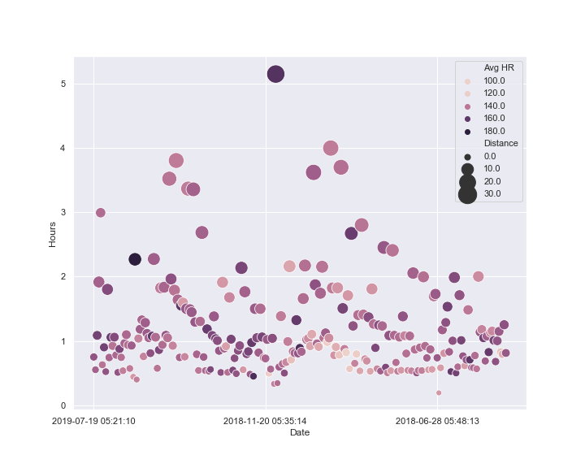

Section 2.10 Sixth Motivating Example - Running Data from Garmin
I have been dealing with an injury for the last month; however I generally try to run close to an hour a day. Here is a report of my running activities from Garmin.
run = pa.read_csv('Data Sets/Pierce_Garmin.csv')
print(run.shape)
run.head()
(320, 29)
Note the big change for this example here is that we have Dates and Times!
def hours(timestr): # function to convert HH:MM:SS to Hours decimal
ftr = [1, 1/60, 1/60/60]
return sum([a*b for a,b in zip(ftr, map(int,timestr.split(':')))])
run.loc[:, 'Hours'] = list(map(hours, run.Time)) # Adding a feature that is the hours of the run as a decimal
run.loc[run.loc[:, 'Avg HR']=='--', 'Avg HR'] = 'np.nan' # Replacing Garmins symbol for no-data with Pandas, as a string so we can pass it to eval in map. run.loc[:, 'Avg HR'] = list(map(eval, run.loc[:, 'Avg HR'] )) # Even though much of the data is numeric, it was loaded as strings (probably because # of the .csv file Garmin gave us). Easy enough in Python to convert strings to numbers by passing them # through eval with map as long as none of them are gibberish like '--'
sn.set()
fig, axes = plt.subplots(1, 1, figsize=(10, 8));
sn.scatterplot(x='Date', y='Hours', size='Distance', hue='Avg HR',
sizes = (50, 500), data=run, ax=axes);
axes.xaxis.set_major_locator(plt.MultipleLocator(100))
# This is a little trick to only use every 100th tick label.

It would be nice to adjust the x-axis ticks here so that it is just the date and not the start time - that could be done by adjusting the values for Date.
Also the longest run plotted is the NYC Marathon, it would be nice to add a label to it.